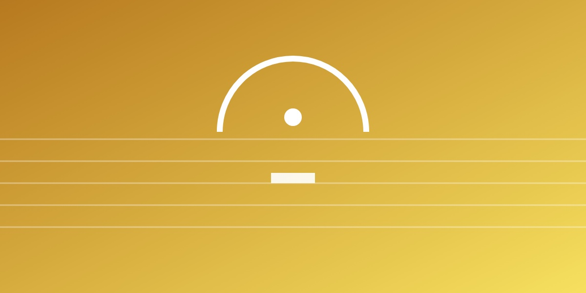

良い「暇」とは空白の時間ではなく、自分で次の意味を探しはじめられる心の余白のこと。
暇は退屈と同じではありません。時間の余白と、そこに意味が生まれるかどうかの2つの軸で見ると、創造的な暇・退屈・多忙・没頭の4つの状態に分けられます。今の社会の問題は「暇ではないのに退屈している」状態です。
音楽で次の音をすぐに鳴らさない「間」が豊かさを生むように、情報から少し離れた余白で、人は自分から次の意味を探しはじめます。身体が落ち着いていること（心拍や呼吸）も欠かせません。その中でアイデアが温められ（孵化）、閃きが生まれます。
この考えを「余白心性学（Mind of Margin）」としてまとめ、乳児から臨床、AIまでを対象に研究を進めています。TEDxUTokyo や内閣人事局の検討会でも、AI時代の働き方として提案しました。